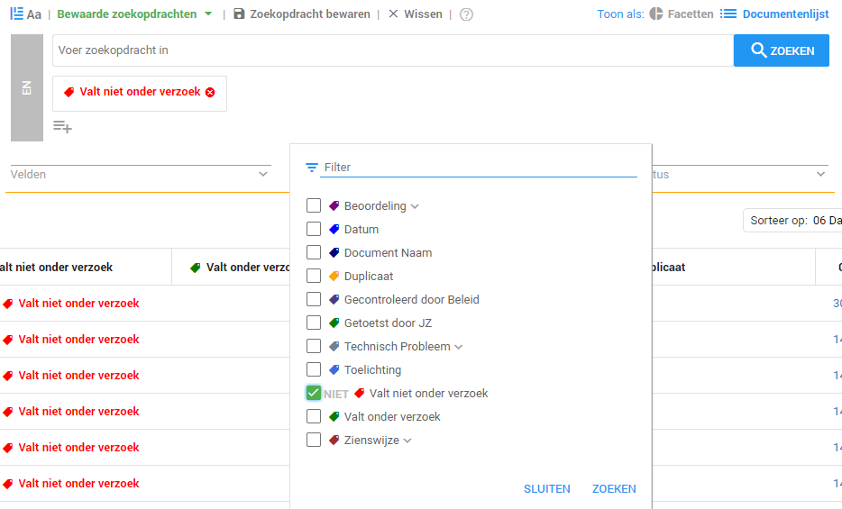
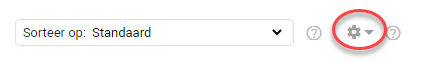
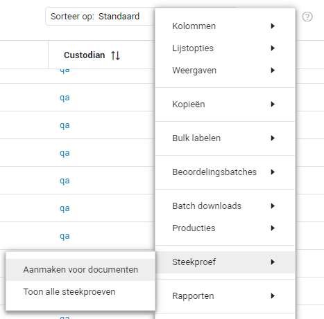
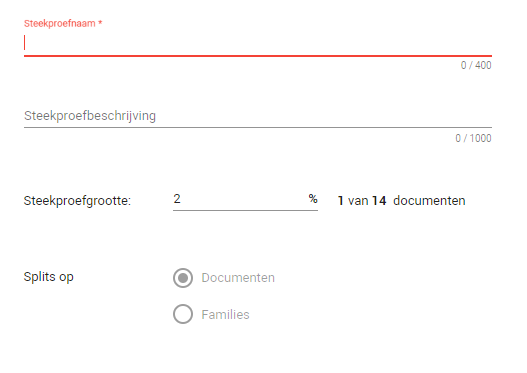
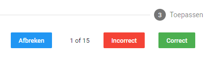
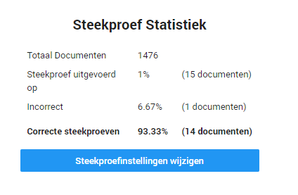
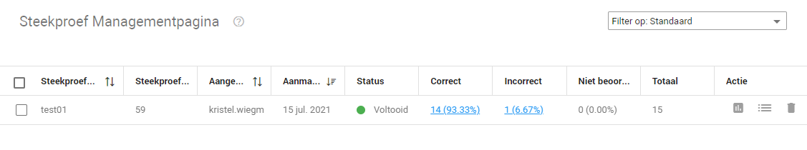

Een steekproef uitvoeren
Het kan wenselijk zijn om een steekproef uit te voeren, bijvoorbeeld om te controleren of alle documenten correct zijn beoordeeld of om te kijken of zich nog mogelijk relevante documenten tussen de niet relevante documenten bevinden.
Om een steekproef te starten begint u bij het selecteren van de documenten waarover u een steekproef wilt uitvoeren. Bij dit voorbeeld wordt een steekproef uitgevoerd over de documenten die niet relevant zijn om te kijken of hier wellicht nog relevante documenten tussen zitten.
- Selecteer de documenten waarover u een steekproef wilt uitvoeren, in dit geval zijn dat de documenten gelabeld als Valt niet onder verzoek.

- Klik rechts, boven de documentenlijst, op het tandwiel icoon.

- Klik vervolgens hier op Steekproef gevolgd door Aanmaken voor documenten.

- Bij Steekproefnaam voert u de gewenste naam toe voor deze steekproef, bij Steekproefbeschrijving kunt u eventueel een beschrijving toevoegen. Bij Steekproefgrootte geeft u het percentage van documenten aan dat u wilt controleren. Bij Splits op selecteert u Documenten. Klik vervolgens op Volgende om de steekproef aan te maken.

- Beoordeel vervolgens alle documenten uit de steekproef door op Incorrect of Correct te klikken.

- Na afloop krijgt u de Steekproef Statistiek te zien. U kunt de streekproef overdoen door op Steekproefinstellingen wijzigen te klikken. Dat betekent wel dat de statistieken van deze steekproef niet bewaard blijven.

- Klikt u op Voltooien dan ziet u de resultaten terug op de Steekproef Managementpagina.
